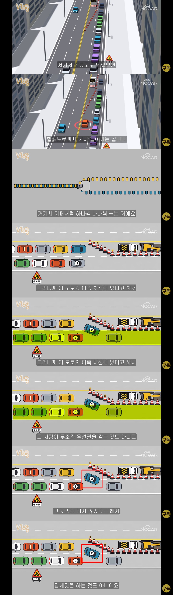

원래 합류구간에선 교대로 들어가는건데
난 미리 변경했다고 죽어도 양보 안하는 무식한 놈들이 많다고 함

원래 합류구간에선 교대로 들어가는건데
난 미리 변경했다고 죽어도 양보 안하는 무식한 놈들이 많다고 함
멍청한건 아니지 그냥 성질 급하거나 심보가 고약한놈들인거지 멍청했으면 차가있겠냐고
사실 공사나 사고같은거면 다 이해하지.
근데 출퇴근길에 저런 합류나 막히는 구간에서, 끼어드는 놈은 그런게 아니잖아.
그냥 나 하나만 편한거지.
다른 사람들은 더 오래 기다려야 함. 모르겠으면 유령정체라는거 찾아봐
그치 나 하나편하자고 그러는거지 근데 그게 모두가 그런건 아니잖아 성질 급한놈들이 많은거지 대한민국에
안껴주는새끼 vs 껴주는데같이끼는새끼 누가 더 나쁜새끼임?
둘다개새끼임. 중요한건 개새끼냐 아니냐지 치와와인지 말티즈인건 그다지 중요치 않음
근데 가끔 그런새끼있음 차 적어서 그냥 한줄로 가고 있는데 옆으로 빠졌다가 끝까지 달린다음에 합류하는 씹새끼들 ㅋㅋㅋ
그거는 못 비껴줌


꼭 다 가기도 전에 차선변경해서 더 정체되게 만드는 새끼들 많음
그게 왜 더 정체돼?
난 항상 잘 끼워주는데 내가 들어갈땐 죽어도 안바켜줌 개씹쌔끼들 아주
껴주고 안껴주고는 제쳐두고 쫌 끝까지 가서 합류하는 걸 교육시켜야함 왜 중간에 끼어들어와
저 앞에가면 안껴줄까봐 껴줄만한 애 찾아가는거임
매일 출퇴근 하는데 우리나라가 맨 끝에서 원바이원 하면 다 끼워주는 수준은 됨
가끔 똘갱이들이 한두대 있긴한데 걍 보내면 끼워줌
중간에 기어들어오면 뒷차가 앞으로 가서 또 끼는데 능지 문제임 진짜
원바이원인데 앞차붙어서 안껴주겠다는샠기들은 애미가뒤진거임??
여기댓글에 좀보이네 애미뒤진애들
안껴줄려고앞차붙어서가는병신새끼있으면 댓글좀달아봐 궁금해서그럼
반대상황이면 안끼냐??이게제일궁금해
ㅋㅋㅋㅋ그건아닌데 원바이원 되던중에 지퍼가 빨리채워져서 끼어들던 뒷뒷차가 맨앞으로가서 끼는건 좀 꼴보기싫긴함
빨리 자율주행 도입할거 아니면 전국민 운전면허 갱신의무화 하면서 대대적으로 교육 들어가야 함. 지퍼식 합류뿐만 아니라 직진우선, 회전차량 우선 이런거 반드시 교육해야 된다고 본다.
대구-경산에서 운전할때 초행길(경북지방사람)이기도 하고 안살아본 곳이라 공사나 원래 그런길이라 저런 도로 상태가 많았는데 존나 잘껴주더라 깜빡이로 고맙다고 대답해주고...
부산은 시발 진짜 울뻔했다 개새끼들
원바이원 국룰대로 좀해라 ㅅㅂ
대구신천대로 성서합류하는길 그렇게 처막혀도 원바이원은 진짜 무조건지킨다
좌회전할 때 오른쪽 차선 물고 도는 병신새끼들
크게 돌아야 한다고 어디서 주워들었나본데
좁은 골목이나 주차장 아니고
n차선 대로에서 그지랄 떠는 병신새끼들이 젤 짜증남
한번비켜주기 시작하면 씹년들이 꼬리물기로 줄줄이 쏘세지마냥 쳐끼어드니까 안비켜주는거지
교차진입 해야지
교차인건 알겠는데 들어올땐 깜빡이는 켜고 들어와라 시발
그냥 인간새끼들 핸들 뺏고 자율주행 해야함 별거도 아닌걸로 아득바득 저거 하나 껴줬다고 ㅈㄹ 하는 새끼들 껴주면 손해 본다는 새끼들 얌체짓 하는 새끼들 다 그냥 핸들 뺏는게 다 같이 평화로워지는 길임
원바이원이 안되니까, 낑긴놈 다음 놈은 나 안낑겨줄까봐 노심초사하고 한번 비켜주면 계속 들어올까봐 맘졸이고 ㅋㅋ
더 잘빠지는 차선 타고가서 무조건 껴드는 ㅅㄲ들도 많음
일본은 저렇게 하더라
두줄서기 하면 좋지, 아주 이상적이야
왜냐면 교통 정체 구간이면 진짜 말도안되는 구간까지 차가 한줄로 밀려있거든
근데 두줄서기하면 저새끼가 나보다 먼저 와있던건지
아닌지 확인 할 방법이 없음 ㅋㅋ
내 앞에 한대는 껴주고 나 들어가는건 ok
근데 내 앞에 껴주고 그 뒤에잇는새끼가 지도 껴달라는거는 시발맞짱뜨자는거지
일본차 타는 새끼들 저ㅈㄹ 함
그건 양심이 아니라 멍청한거임. 중간에 끼면 네 뒤에 차들은 4대 기다릴거 6대 기다리게 되는거.